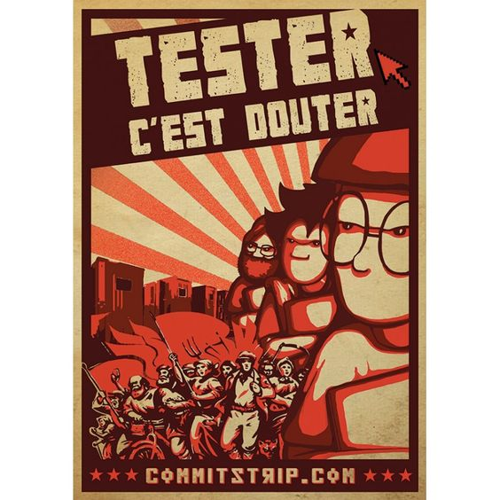
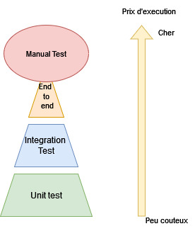

Tester une application
Pourquoi tester ?
Pourquoi tester ?
- Verifier qu'il n'y a pas de régression
- Verifier que les nouvelles fonctionnalités fonctionnent
Comment tester ?
TDD
C'est quoi tdd

Pourquoi ?
- Reduire le temps de dev
- Faire des test de qualité
Pourquoi on gagne du temps
A la main
- Demarrer l'appli
- Preparer / reset les données
- Verifier le resultat
Avec des Tests
- Lancer le test
Mon (vrai) avis sur le tdd
- Essentiel pour le débogage
- Pratique pour des Poc Technique
- Compliqué pour reflechir a une architecture
Les tests unitaires
-
Objectif :
- Tester une class
- Mocker les dependances
C'est quoi un mock ?
Feature
Faire une virement d'un montant x entre 2 compte. Retirer X au compte source et ajouter X au compte cible
Play Time
Play time Angular
Les test d'integrations
- Lancer tout ou une partie de l'application
- Met en place une base de donnée
- Quelque mock (Service externe)
Pourquoi faire un test d'integration
- Tester la communication entre les class
- Tester la communication avec le framework
- Verifier la compatibilité de la base
Pourquoi faire des tests unitaire ? Les test d'integration ca suffit ?
Plusieurs niveaux de test d'integration
- Test de repository -> Test de la base
- Test de Service -> Test du framework + base/transaction
- Test de controlleur -> Test auth + Mapping (Json -> Dto -> Domain) + PATH
Test de controller
- Utiliser MockMvc
- Mocker les Service (On veut verifier le mapping)
C'est quoi la base ? C'est pas un postgres !
C'est une base H2
Base SQL in memory, attention il y a des petite difference avec postgres
Je dois me connecter à un middleware comment faire
Essayer TestContainer
Je test mon client http qui se connecte a l'api d'un fournisseur
Les Test ne doivent jamais faire de vrai requete vers un serveur externe
Les tests End-to-end
Principe
- Lancer une application complete (Middleware/BackEnd/FrontEnd)
- Simuler des actions sur un navigateurs
- Verifier le comportement de l'application
Objectif
- Verifier que tout communique correctement
Difficulté
- Preparer la base
- Lourd à executer
- Lourd à ecrire
- Quand les executer ?
- Difficile a maintenir
Faut il le faire
- Oui !!!
- Au moins sur les chemins usuel
- Ne remplace pas les tests manuel
Exemple avec Selenium
C'est quoi un fake*
- Une implementation simplifier
- Exemple : remplace une repository par une implementation qui stock dans une map